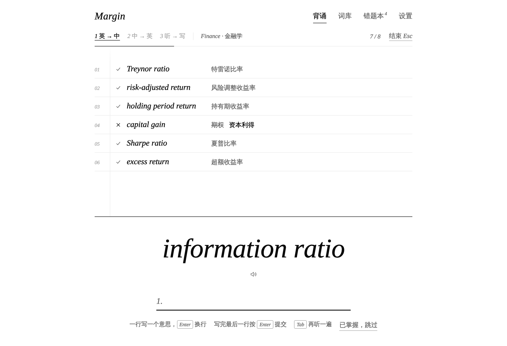

Marginal Vocabulary
黑白极简的背单词工具
下载后双击 Marginal Vocabulary.html 就能打开，不用联网。推荐 Chrome 或 Edge。
- 每组三步：看英文写中文 → 看中文拼英文 → 听发音拼英文
- 每日目标和每日复习
- 词根：按词库学词根词缀，背单词时显示单词拆解
- 词库：Finance、Medicine、CET-4、CET-6、GEE、TOEFL、IELTS、GRE、GMAT
- 导入自己的词表

黑白极简的背单词工具
下载后双击 Marginal Vocabulary.html 就能打开，不用联网。推荐 Chrome 或 Edge。
